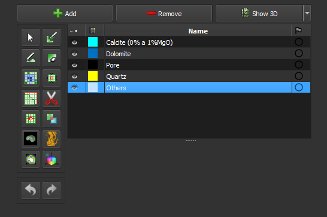

FlowStepsManualSeg
Segmentação Manual
Edite a segmentação com ferramentas manuais. Esse passo pode ser usado para editar a segmentação criada no passo anterior (Smart-seg), ou para editar uma segmentação nova.
Módulo correspondente: Segment Editor
Elementos de Interface

Página principal: Segment Editor